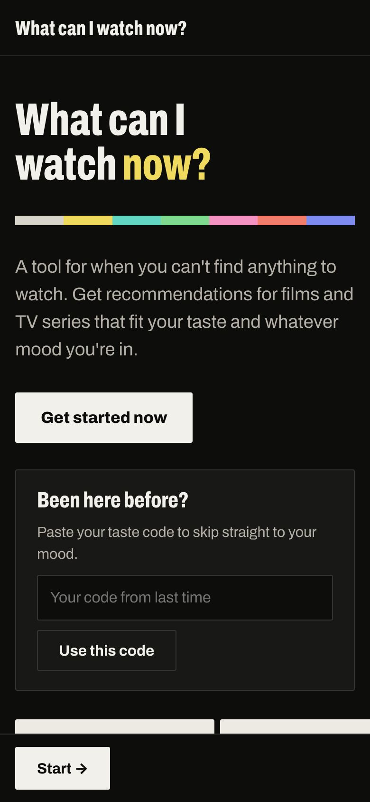
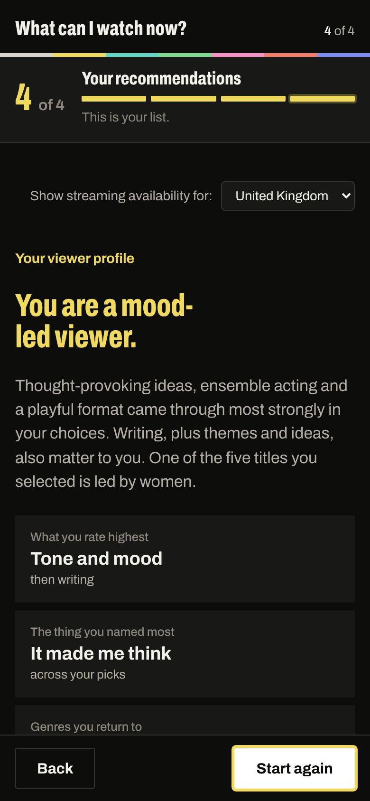
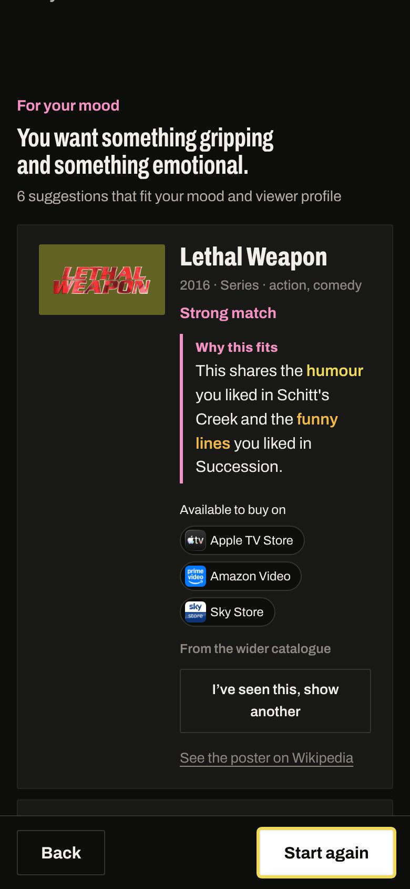

Live product · Published case study
What Can I Watch Now
A film and TV recommendation tool that asks what matters to the viewer, scores a hand-labelled catalogue and builds a recommendation list.
PurposeHelp people choose using reasons and context, not only popularity.
ReleaseSeven of nine prioritised changes shipped.
DiscoveryThree user sessions, the funnel and a check of the live product.
MeasurementEvery change checked on the live site; results not measured yet.


